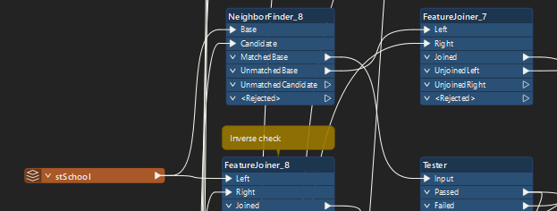
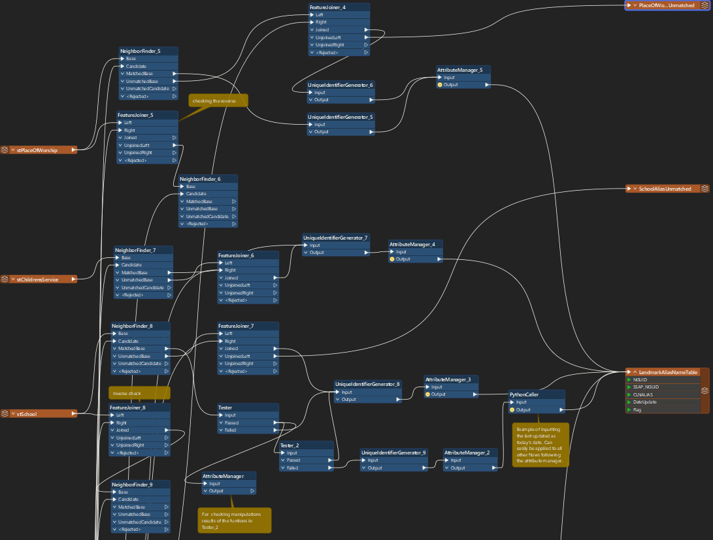

Data Exploration
Vital for understanding the problem
The process of the curation an customization of an automated process for translating and matching alias names to their addresses in the core master address feature class involved four major phases within the scope of the project: data exploration, application of NENA standards, spatial matching and honing, and enhancement of robustness and integrity of the model. Exploration of data included the examination of data types and formats, as well as table and feature relationships, interdependencies, domains, and subtypes. Exploration was also necessary to identify missing values in the core master address point feature class. Working inside Esri’s Arcgis Pro was also essential in reaching a visual understanding of, namely, alias name point feature classes, core master address point feature class, and building footprints.
Enhancing Robustness and Integrity of the Model
To enhance the robustness of the model and account for various types of matching errors or catching unmatched addresses, Tester and AttributeManager transformers were used. Depending on the nature of the alias point feature class and its matches, spatial relationships to the core address data, and how mismatches and unmatched addresses looked, different translation paths were taken; though the four aforementioned transformers were always used.
Tester transformers were used to test for potential matches between points that were spatially close but did not have address attribute matches. The following is how similar entries were tested; the method was to simplify address field entries to be lowercase and lacking in punctuation. Depending on what a user may view in terms of punctuation (dashes, for example), they can be added to this tool.
Address mismatches within 30 meters were often due to discrepancies in punctuation between attribute fields. AttributeManager transformers were used to identify these discrepancies, and the strongest matches were found when both spatial proximity and address attributes aligned. Unmatched addresses were categorized separately and needed manual review, with efforts to refine the model achieving over 97% accuracy in alias matching, supported by Python scripts for backup and data integrity.
Final Product
To handle inconsistencies in data entry, a robust error-handling method for translating data through spatial and attribute joins and matches is required. A prototype methodology was developed for the stSchools alias names point feature class and tested on five other alias feature classes: stPlaceofWorship, stChildrensService, stPOICinema, stLibrary, and hsHospitals. This method uses the FeatureJoiner, NeighbourFinder, AttributeManager, and Tester transformers, with NeighbourFinder first applied with a 30-meter search radius. Unmatched aliases are further processed by FeatureJoiner for exact matches, followed by testers for exact and similar address matches, and unmatched entries are sent to a separate table. Most addresses are successfully matched, and unmatched entries are flagged for further review. See experience builder for the visualisation of these findings!